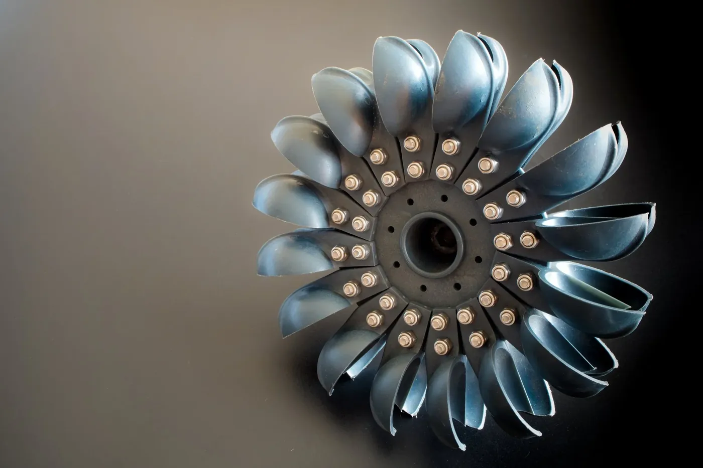
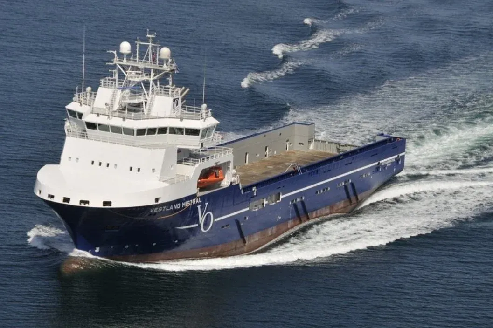

Forside/Tjenester
Produkt og tjenester
Maskinering, vasskjæring og engineering – med produksjon og kontroll i samme leveranse.
01 / Maskinering
Bearbeiding med toleranse
Maskinering av komponenter til industri, maritim og offshore. Vi jobber etter tegning og dokumenterer kontrollen.
- Dreing og fresing.
- Enkeltdeler og serier.
- Kontroll og dokumentasjon.


02 / Vasskjæring
Kapping uten varmepåvirkning
Vasskjæring gir kapping med liten varmepåvirkning, egnet for materialer som ikke tåler vanlig skjæring.
- Kapping av plater og rør.
- Presis kontur før bearbeiding.
- Egnet for flere materialtyper.
03 / Engineering
Før produksjonen starter
Engineering avklarer konstruksjon og dokumentasjon før noe går i produksjon. Da blir det færre overraskelser i produksjonen.
- Konstruksjon og tegning.
- Materialvalg.
- Teknisk dokumentasjon.
Hvilken tjeneste trenger dere?
Ring, så avklarer vi hva som kan leveres og når.